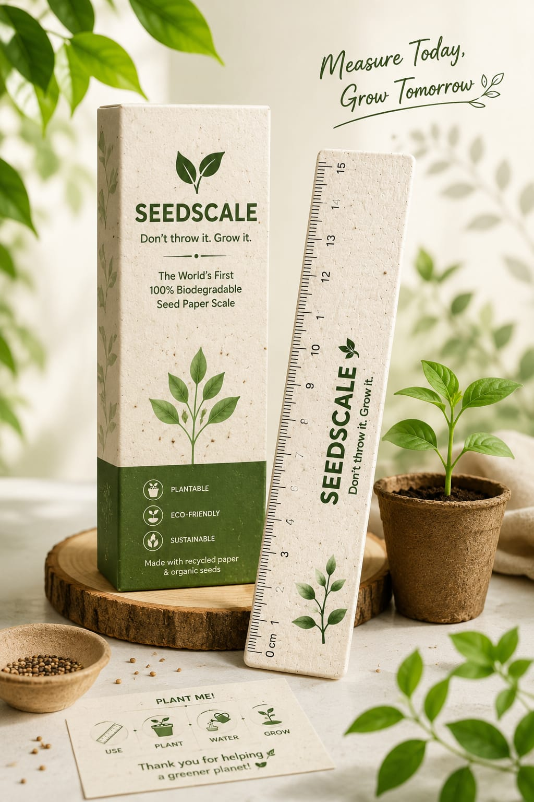

Seedscale is an innovative eco-friendly measuring scale made entirely from 100% biodegradable seed paper. It is designed for students, offices and eco-conscious users who want to replace plastic stationery with a sustainable alternative.
Unlike traditional plastic scales that become waste, Seedscale can be planted after use. With water, sunlight and care, it grows into herbs, flowers or vegetables. It is stationery that returns to nature.

Made from recycled paper pulp and natural materials that decompose naturally without creating pollution.
Embedded organic seeds transform the used scale into herbs, flowers or vegetables.
A sustainable replacement for traditional plastic stationery products.
Combines education, creativity and environmental responsibility in one product.